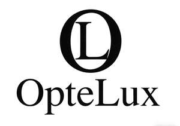

Trade Mark Journal No.2025/044 31 October 2025
UK00004281145 21 October 2025 (9,35)

- Class 9
- Optical glasses; Antireflection coated eyeglasses; Anti-dazzle spectacles; Chains for spectacles; Children's eye glasses; Cases for children's eyeglasses; Cases for spectacles and sunglasses; Polarizing spectacles; Eyeglass cases; Eyeglass chains; Eyeglass frames; Eyeglass lenses; Eyeglasses; Sports eyewear; Spectacle frames made of metal or a combination of metal and plastics; Spectacle frames made of metal and of synthetic material; Anti-glare glasses; Spectacle lenses; Smartglasses; Spectacles [optics].
- Class 35
- Business management for shops; Administration of the business affairs of retail stores; Provision of an on-line marketplace for buyers and sellers of goods and services; Outsourcing services [business assistance]; Promotion, advertising and marketing of on-line websites; Providing a searchable online advertising guide featuring the goods and services of other on-line vendors on the internet; Production of teleshopping programmes; Wholesale ordering services; Arranging and conducting trade show exhibitions; Providing online marketplaces for sellers of goods and or services; Marketing, advertising and promotion services; Development of marketing strategies and concepts; Administrative processing of purchase orders placed by telephone or computer; Business management of wholesale and retail outlets; The bringing together, for the benefit of others, of a variety of telecommunications services, enabling consumers to conveniently compare and purchase those services; Retail services in relation to cups and glasses; Retail services in relation to domestic electronic equipment; Brand creation services; Providing a searchable online advertising guide featuring the goods and services of online vendors; Brand creation services (advertising and promotion); Provision of business and commercial contact information via the Internet.
NANJING MEDICAL AND PHARMACEUTICAL CO., LTD
Representative: XIKEIPR LIMITED